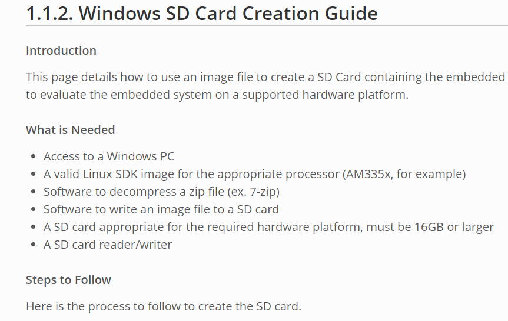
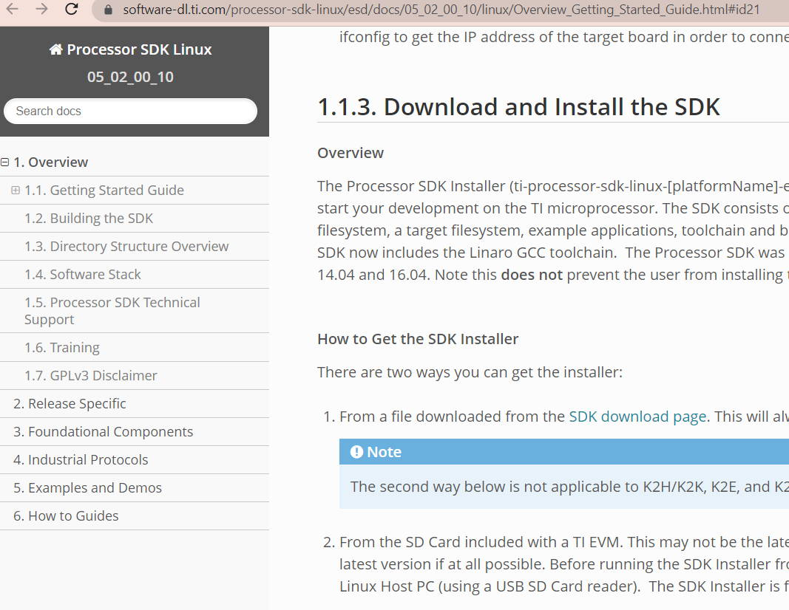
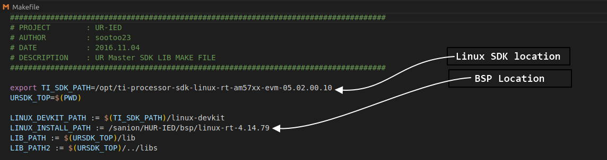
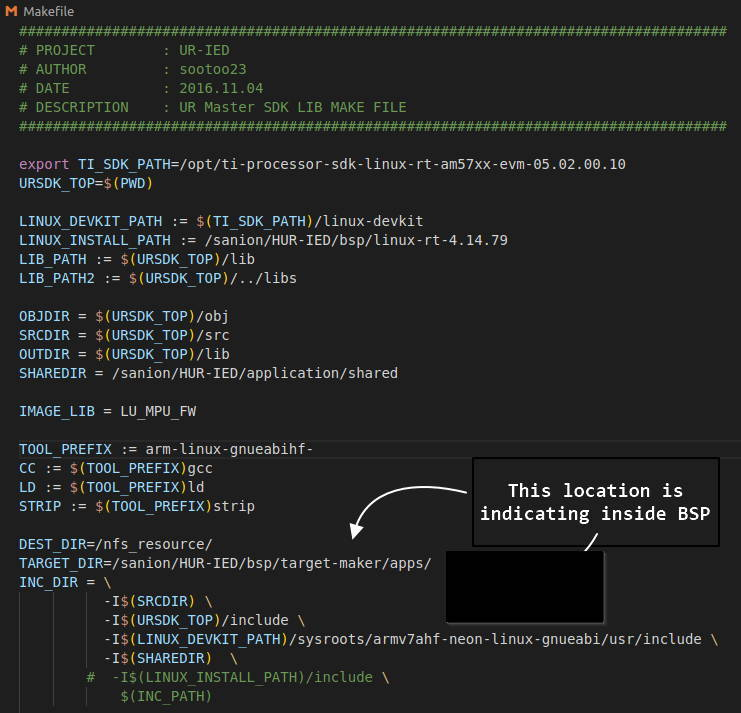
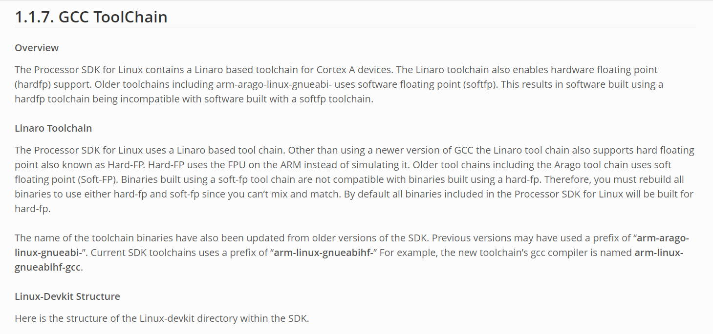
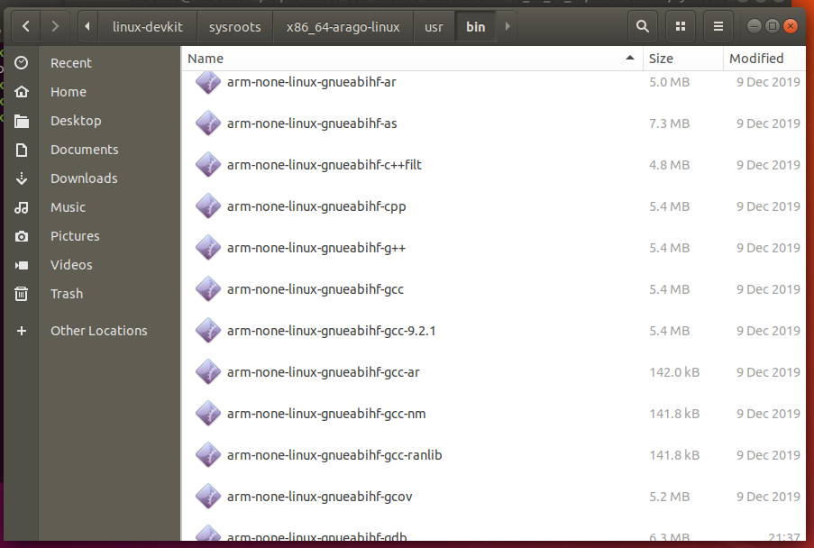
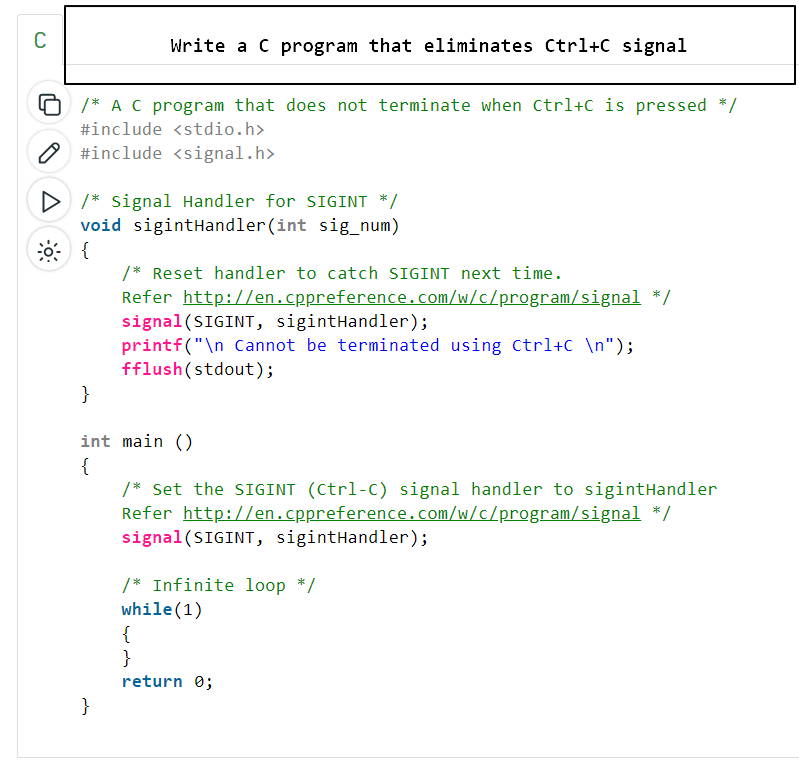
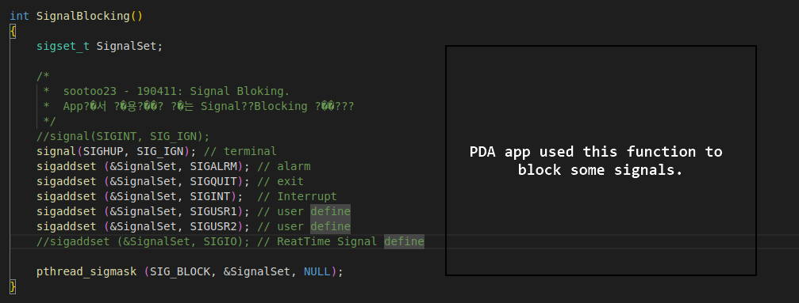
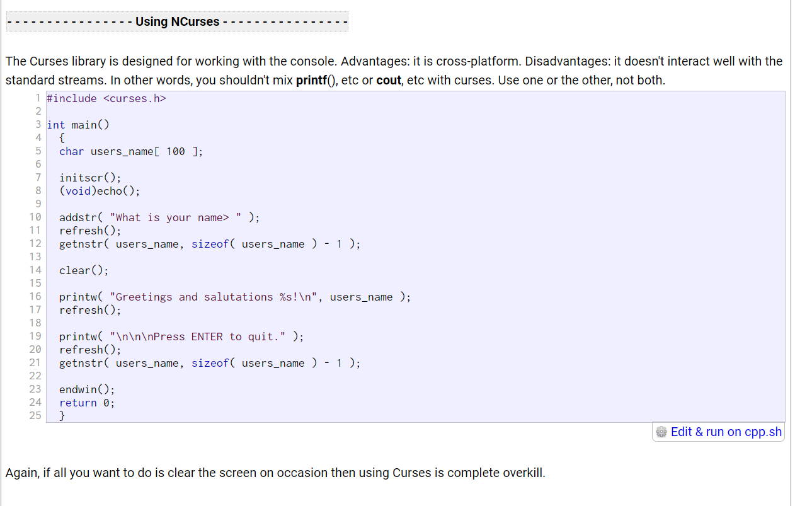

From the instructions we can make our custom app by just make command in the Ubuntu VM. The files are already placed at several locations.
All the locations are explained below. We can start development directly in the VM. We are trying to understand the locations of the required resources here.
Also the ti sdk documentation stated some requirements which is already done in the Ubuntu VM. The links to ti sdk documents and requirements are mentioned below.
check 1.1.2 : 1.1.2. Windows SD Card Creation Guide

Reference 1.1.3. Download and Install the SDK

These documents statements some requirement before ti Linux development. The SDK folder is in/opt/ti-processor-sdk-linux-rt-am57xx-evm-05.02.00.10/ Location in Ubuntu VM. The Project is in/home/taki/LocalUnit in Ubuntu VM.
The makefile inside /home/taki/LocalUnit/sdk is for build the project. This makefile includes the sdk location as

Also see the BSP location /sanion/HUR-IED/bsp/linux-rt-4.14.79
Also check the following locations that indicates to inside bsp locations.

After download ti-processor-sdk-linux-rt-am57xx-evm-08_02_01_00-Linux-x86-Install.bin file
we have to run it in Ubuntu.
After installing the binary:
Following article at GCC1.1.7 GCC Toolchain states various folder locations of the toolchain.

It looks like ti-processor-linux-..../linux-devkit/sysroots/x86_64-arago-linux/ location has the cross compiler tools.

Making a NFS from online guide did not goes well. Install by sudo apt install nfs-kernel-server.
edit /etc/exports for setting up the folder for nfs. /var/nfs/general *(rw,nohide,insecure,no_subtree_check,no_root_squash)
Create a folder /var/nfs/general . After any change to /etc/exports restart the service
as sudo systemctl restart nfs-kernel-server . You also need to setup ufw firewall
commands as sudo ufw allow from 203.0.113.24 to any port nfs .
In the client create a folder (my folder is general) use command mount 192.168.10.16:/var/nfs/general general
This docs could help a small .
Write a C code that eliminates Ctrl + c signal.


We may usually want to use ncurses
